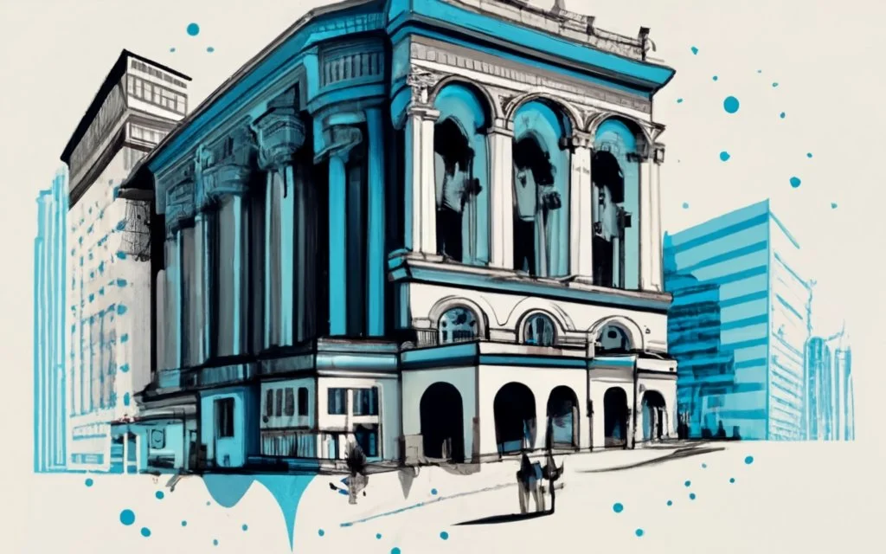

EVENTS
Innovation Junction: Building Tomorrow's Rosario!
Join us at "Innovation Junction," a groundbreaking event hosted by the Rosario Chamber of Commerce, where innovation intersects with opportunity! This dynamic gathering brings together visionary entrepreneurs, industry leaders, and forward-thinking businesses to explore, collaborate, and unleash the limitless potential of Rosario's business landscape.
Date and Time: 15 JAN 2024 06:00 PM
Event Highlights:
- Keynote Speakers: Gain insights from renowned thought leaders shaping the future of business and innovation.
- Interactive Workshops: Dive deep into cutting-edge trends, technologies, and strategies transforming industries.
- Networking Extravaganza: Connect with like-minded professionals, potential collaborators, and business influencers.
- Showcase of Innovation: Witness firsthand the groundbreaking products and services propelling Rosario into a new era.
- Collaborative Panels: Engage in thought-provoking discussions on fostering innovation, sustainability, and economic growth.
Why Attend?
"Innovation Junction" is not just an event; it's a catalyst for change. Whether you're an established business, a budding entrepreneur, or a curious mind, this is your opportunity to be part of Rosario's transformative journey. Unleash your potential, connect with innovators, and contribute to shaping a future where business thrives in harmony with innovation.
Mark your calendars for "Innovation Junction" - where the future of Rosario's business landscape begins! Stay tuned for more details and get ready to embark on a journey of discovery and innovation. Together, let's redefine what's possible for Rosario's business community!